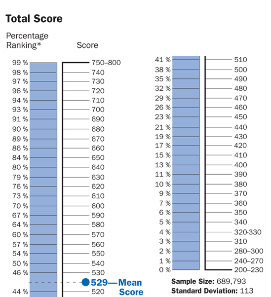

April 24,2020
The Graduate Management Admission Test, or GMAT, is an important part of the business school application process. The GMAT is a multiple-choice, computer-based and computer-adaptive standardized exam that is often required for admission to graduate business programs (MBA) globally.
The GMAT contains four distinct section types, although you’ll use the same critical thinking and analysis skills throughout the test, just like you will during your MBA coursework. The content on the GMAT is broken down into four scored test sections, two of which are scored separately, and two of which are scored separately but are also combined to generate your composite score: Analytical Writing Assessment Integrated Reasoning Quantitative Verbal GMAT test takers are able to choose the order in which they take GMAT test sections. You will choose your section order at the test center following the computer tutorial and just before you begin your test. There are three orders you will be able to choose from: Analytical Writing Assessment (AWA), Integrated Reasoning (IR), Quantitative, Verbal Verbal, Quantitative, Integrated Reasoning, Analytical Writing Assessment Quantitative, Verbal, Integrated Reasoning, Analytical Writing Assessment The Analytical Writing Assessment section of the GMAT is scored separately from 0 to 6 in half-point increments. The Integrated Reasoning section is also scored separately on 1–8 scale, in one-point increments. The Quantitative and Verbal sections each have a scaled score of 0–60. They are then combined to generate a score on the 200–800 scale, with 10-point increments, you’re probably most familiar with. Your score on the 200–800 scale, in 10-point increments, reflects the level of difficulty of the questions you answered correctly using a proprietary GMAC algorithm. The mean score for Verbal is 27, while the mean score for Quantitative is 39. The mean is 4.4 for Analytical Writing and 4.2 for Integrated Reasoning. The score that MBA programs weigh most heavily for admission is your combined Verbal and Quantitative scores. Here, the GMAT applies its algorithm to your Verbal and Quantitative scores, converting them to the familiar 200–800 scale, where the mean score is 552. See more on how the GMAT is scored below.
When considering your GMAT score goal, it’s always a good idea to look at the mean or average GMAT score of admitted applicants to the MBA programs you’re considering applying to. This will give you a good baseline The Quantitative and Verbal sections of the GMAT are each scored from 0 to 60, with the mean score for Quantitative at 39 and the mean score for Verbal at 27. The score business schools and MBA programs pay the most attention to is the combined 200–800 score scale, where the mean score is 552
There are several aspects of the GMAT that make it a tough test. First, the unique computer-adaptive format of the GMAT means that you will not be able to skip a hard question and come back to it later; you must pick an answer and move on. At the same time, you’re rewarded not only for correct answers but also for correct answers to high-level questions. All this means that you have to both answer difficult questions and do it quickly. In addition, you’ll see question types and formats that you’ve likely never seen in your academic career.